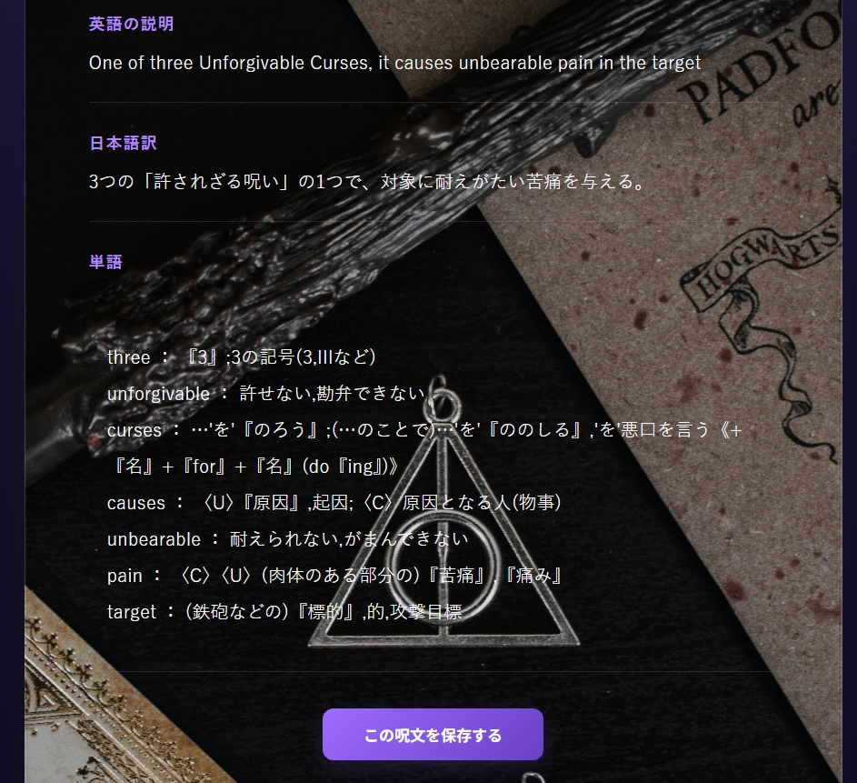
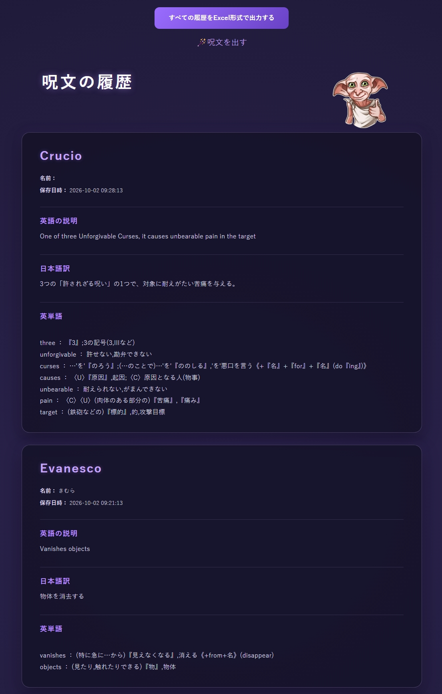

画像：呪文情報と日本語訳
image/hp-spell.jpg
image/hp-spell.jpg
FEATURE 01
呪文情報の取得・日本語訳
Harry Potter APIから呪文の名前と英語説明文を取得し、ランダムに選んだ呪文を表示します。deep-translatorを使った日本語訳もあわせて確認できます。
- 外部APIから呪文を取得
- ランダムに一つの呪文を選択
- 英語説明文と日本語訳を表示
PERSONAL PROJECT / 02
呪文を題材にした英語学習Webアプリ
呪文の英語説明文を日本語訳とともに表示し、単語の意味を調べられる英語学習アプリ。学習した呪文は履歴として保存し、Excel形式でダウンロードできます。
01 / OVERVIEW
ハリー・ポッターの呪文を題材に、興味のある作品を通じて英語を楽しく学べるWebアプリをFlaskで制作しました。
外部APIから取得した呪文の英語説明を日本語訳とともに表示し、英文から抽出した単語を辞書APIで調べられます。学習した呪文とその内容はSQLiteに保存でき、履歴の閲覧やExcelへの出力にも対応しています。
02 / FEATURE DETAILS
スクリーンショットとともに、呪文の取得から学習履歴の保存・出力までを紹介します。

FEATURE 01
Harry Potter APIから呪文の名前と英語説明文を取得し、ランダムに選んだ呪文を表示します。deep-translatorを使った日本語訳もあわせて確認できます。

FEATURE 02
説明文から正規表現で英単語を取り出し、重複・短い単語・一部の基本語を除外します。NLTKで動詞・名詞・形容詞の原形候補を作り、辞書APIから日本語の意味を検索します。

FEATURE 03
ユーザー名とともに呪文名、英文、日本語訳、単語の意味をSQLiteに保存します。保存した呪文は履歴画面で新しい順に閲覧できます。

FEATURE 04
履歴に保存した呪文名・英文・日本語訳・単語の意味をopenpyxlでExcelファイルにまとめ、ダウンロードできるようにしました。
03 / LIVE DEMO
公開中のWebアプリから、呪文の取得・英単語の検索・学習履歴の保存をお試しいただけます。
ユーザー名を入力して呪文を表示し、英語説明文と日本語訳、単語の意味を確認できます。学習した内容を履歴に保存し、Excel形式でダウンロードできます。
04 / VIDEO
呪文の取得から単語検索、履歴保存までの操作を動画で紹介します。
収録例：呪文取得 → 日本語訳・単語の確認 → 履歴保存 → Excel出力。※動画ファイルはご自身で配置してください。
05 / DEVELOPMENT
呪文の取得、英語説明文の翻訳、単語の意味検索を組み合わせ、一つの画面で学習できるようにしました。
正規表現で取り出した単語の重複や基本語を除外し、NLTKで原形化してから辞書APIで調べる処理を実装しました。
フロントエンドにはJavaScriptも使用しています。Python・Flaskによるサーバー側の処理と組み合わせ、Webアプリの画面を構成しました。
openpyxlを利用し、保存した学習履歴をExcelファイルとして生成・ダウンロードできるようにしました。
06 / GENERATIVE AI
外部サービスを用いた翻訳・辞書検索と、開発時の生成AI利用は区別して紹介します。
英語説明文の日本語訳はdeep-translatorを、英単語の意味検索は外部の辞書APIを利用しています。貼り付けたコードからはアプリ内で生成AIモデルを直接呼び出す実装は確認できないため、生成AI機能とは区別しています。
開発で生成AIを使用した範囲に合わせて、実際に相談した内容や、自分で確認・修正した点を記載してください。
07 / NEXT STEPS
公開環境で日本語訳が表示されない場合があるため、翻訳サービスへの接続や例外処理を見直し、安定して学習できるように改善したいと考えています。
また、外部APIの取得失敗時に適切な案内を表示するなど、操作時の分かりやすさも改善したいと考えています。